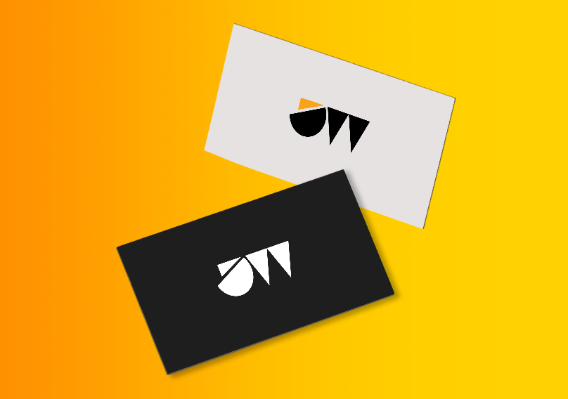
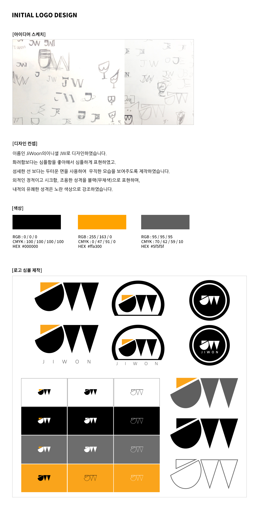

Self-Book Design
목록으로


- 작업년도 : 2018
- 작업범위 : 기획 · 로고 디자인 · 시그니처 제작 · 아이디어 스케치
- 사용툴 : Photoshop · Illustrator
- 작업설명 :
이니셜 JW를 기반으로 단순하고 직관적인 형태의 개인 로고를 제작했습니다. 둥근 면과 각진 면의 대비로 성향을 시각적으로 표현하고, 블랙과 옐로우 포인트 컬러로 로고의 아이덴티티를 강화했습니다. 다양한 환경에서 활용할 수 있도록 여러 버전으로 확장 제작했습니다.